ふなっしー（Funassyi）
想不到歌琳廚房第二篇文居然是玩個造型咖哩飯 XD
這過動兒大家對他可能比較陌生，我也是因為卡內麻才知道這傢伙有多促咪爆笑
這怪咖吉祥物叫芙那西 ふなっしー（Funassyi），是梨子精來著
今年在日本爆紅的千葉縣船橋市的“非官方“吉祥物
現在上遍各大日本節目，比官方的吉祥物知名度高很多（？）
搞得他們要正式承認他也不是，不承認他，但他又很紅，好兩難，哈哈哈哈
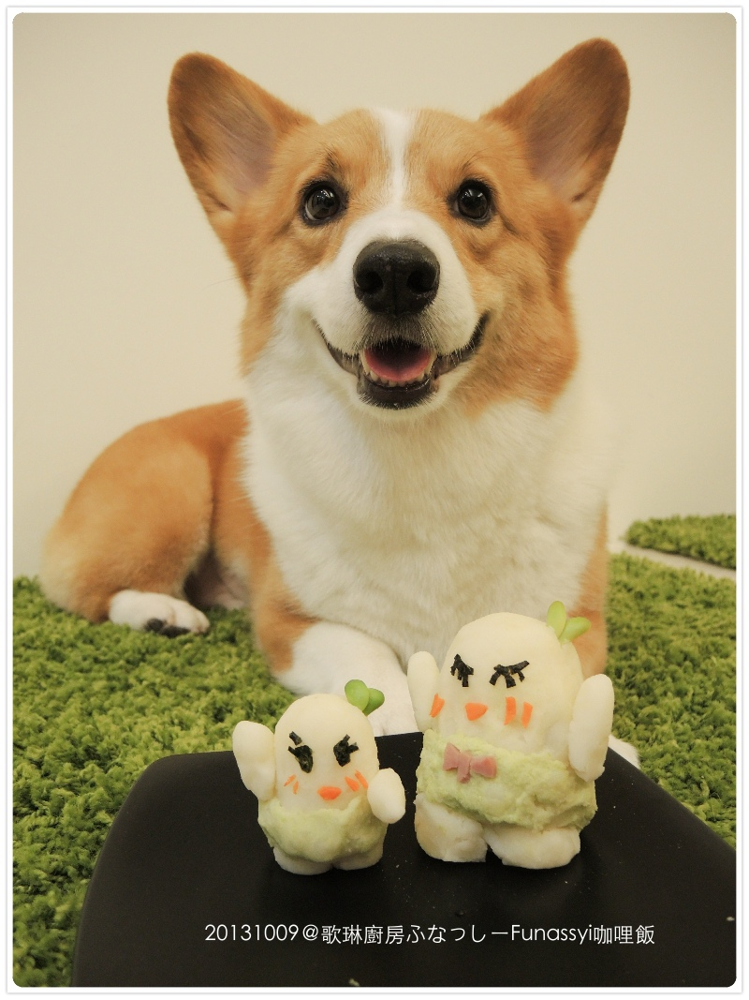
本尊長醬～～明明就長得像芭娜娜不像梨子的梨子精 哈哈哈
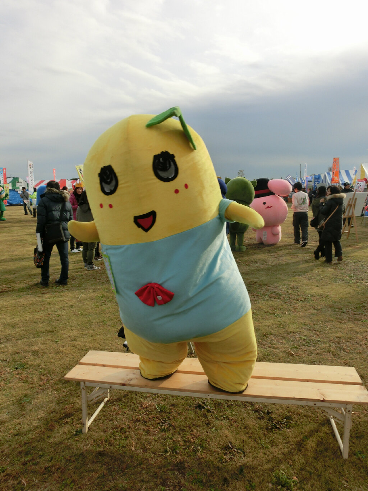
會搞這個是因為卡內麻前幾天在我的wall上留言指名要吃這道
我的無腦魂不小心被燃起，而且冰箱剛好有這些材料，只差個毛豆，買到後索性就開工
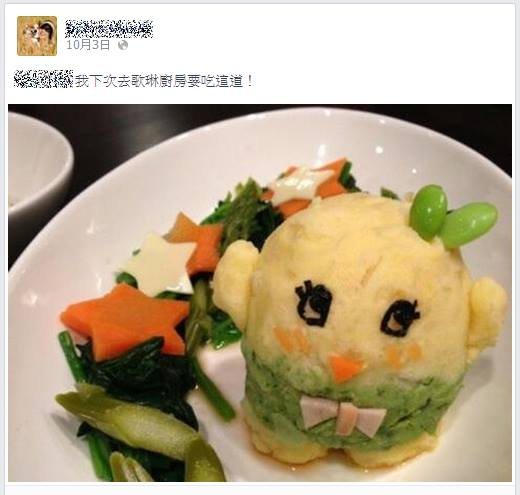
煮好馬玲薯跟毛豆仁，然後再打成泥就可以開始玩泥巴了（誤）
只不過毛豆打出來的顏色好淡，而且我後來才想起來芙那西衣服根本是藍色的啊！！（被誤導）
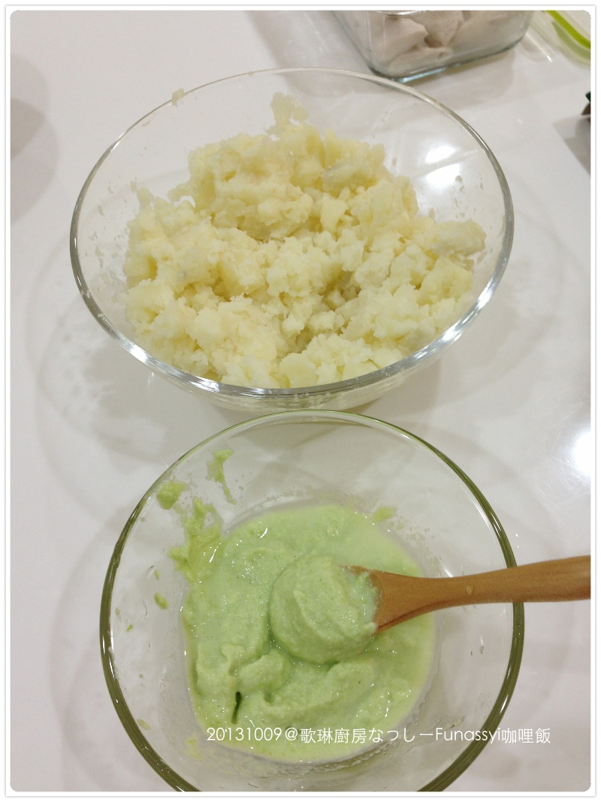
弄這東西真的很麻煩，真心佩服會幫孩子做卡通便當的媽媽了
那海苔眼睛跟胡蘿蔔小嘴真把我這男子漢弄的很毛躁
猛哥回來居然跟我說這種女孩兒的細活怎麼不留給他弄...............冏
不虧是我ㄤ果然很了解我，不用我抱怨完全清楚我一定在這塊爆怒過了 哈哈哈哈哈
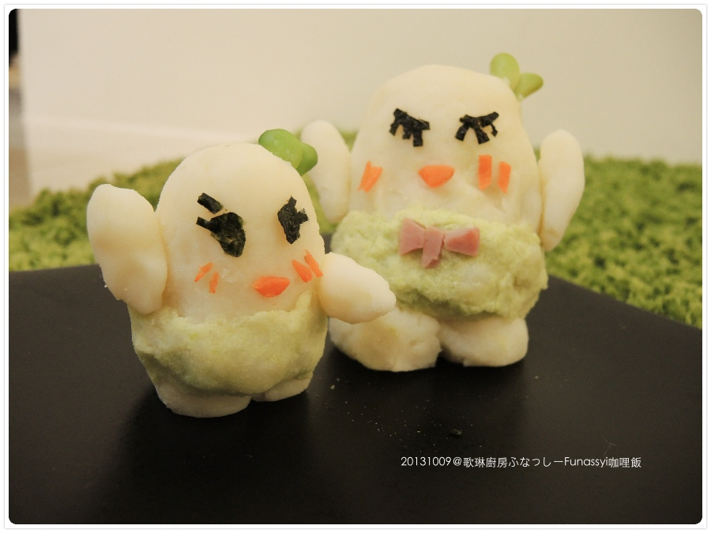
完成了還算成功啦！
這是小林尊卡卡（？）參加雞肉絲大胃王比賽 XDXDXD
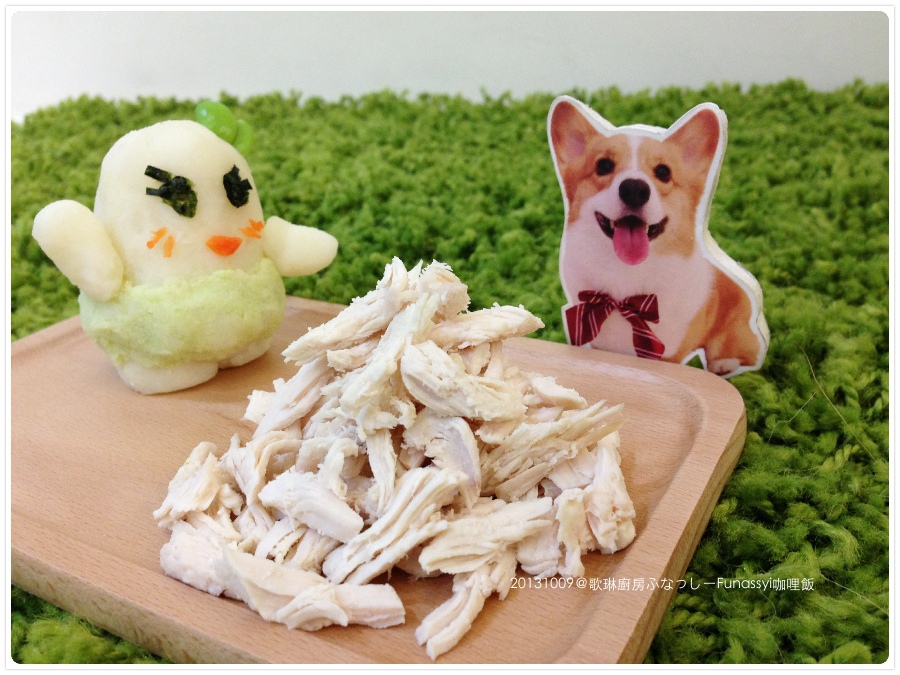
本尊極度不屑表示：媽的！這主辦單位有沒有腦啊～這麼一小口也敢叫大胃王比賽！！！！
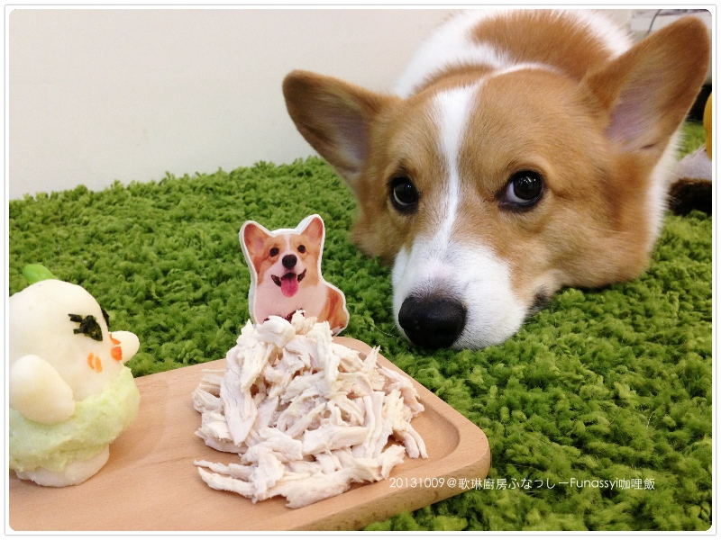
材料太多了，所以老北也有一份
直接讓芙那西泡在咖哩溫泉裡（kimochi 異呦～～～）:D
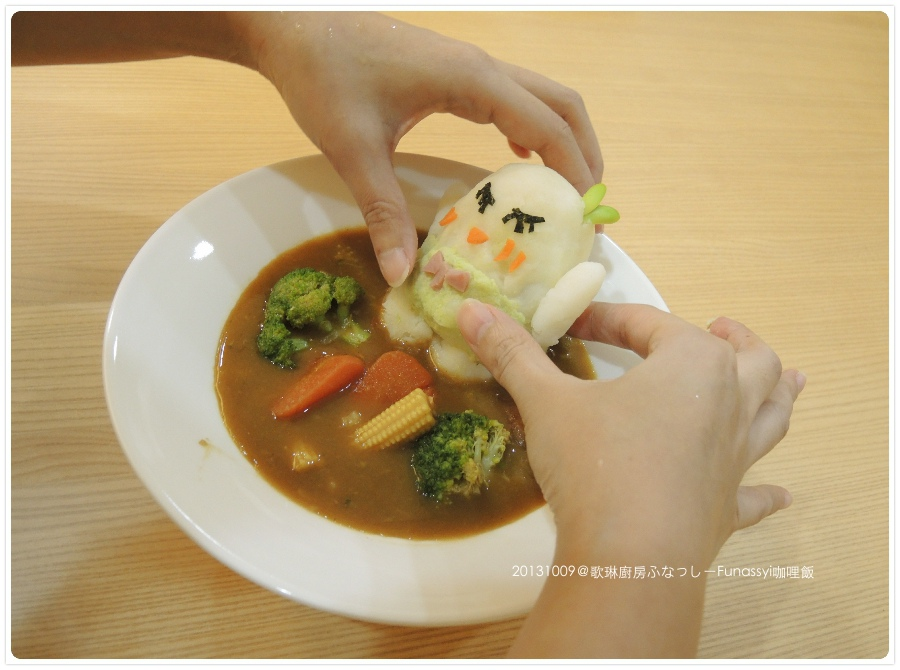
因為手殘，挖不出卡通那種閃亮亮眼睛，只好改用瞇瞇代替
反正泡溫泉就一定要配上舒服的表情呀～所以眼睛不用打開沒關係！！
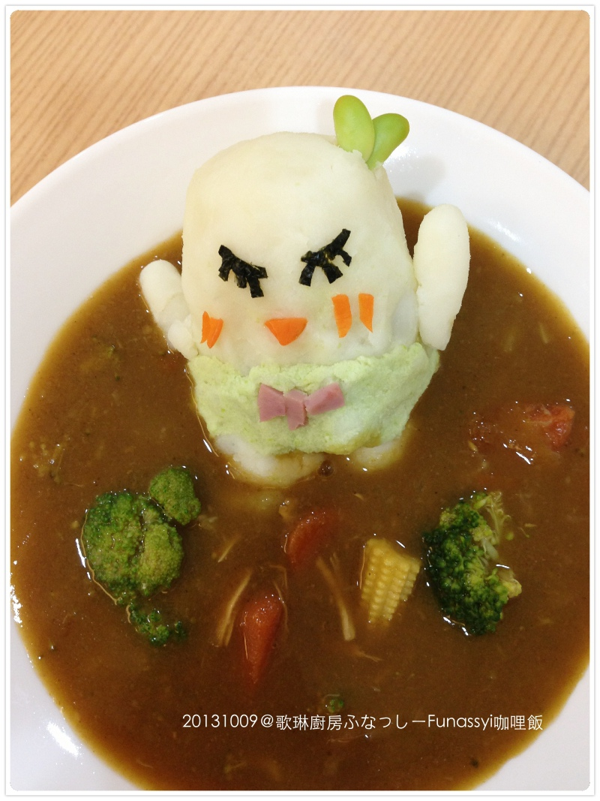
它是顆很紮實的馬玲薯球，吃完一定飽到吐
猛哥吃之前我有貼心提醒他，不要勉強嗑光，而且我東摸西摸都沒洗手就做了 噗哈哈哈哈
吃完要有拉到脫肛的心理準備 
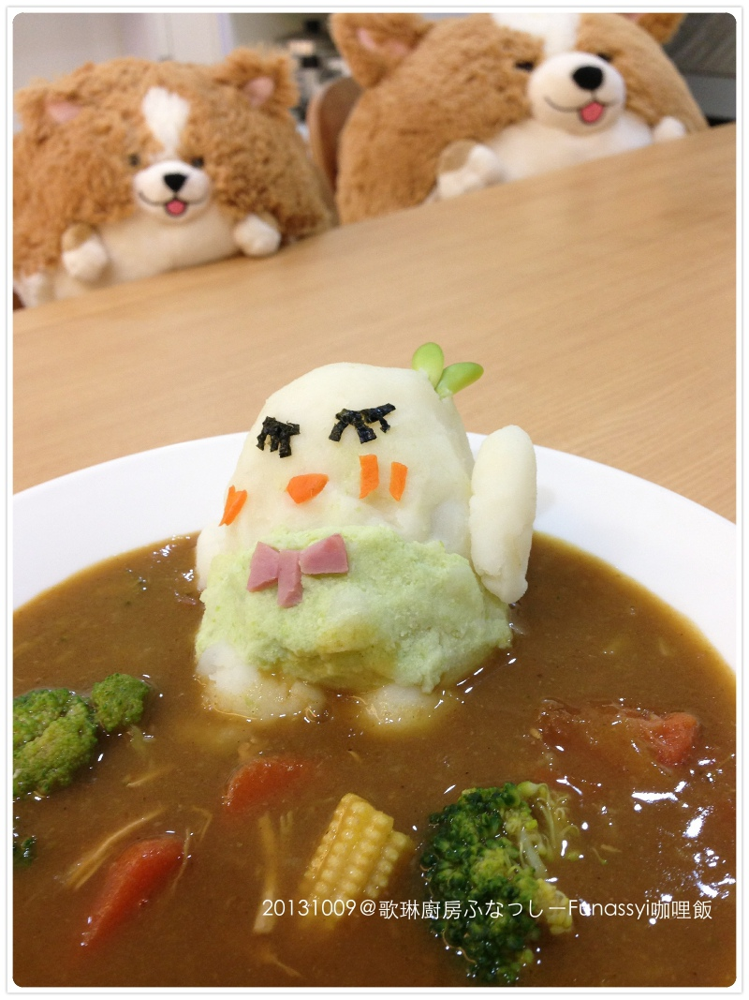
卡卡迫不及待！！！！！
他要吃的時候我有把芙那西的五官全毀了再讓他開動
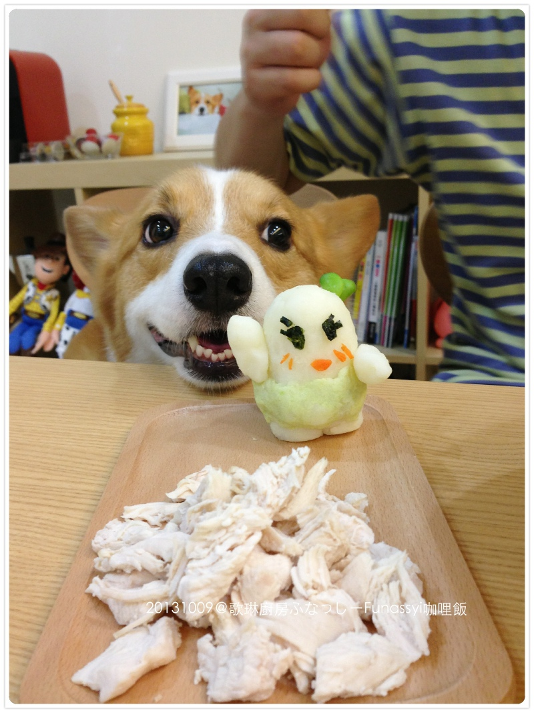
父子檔的親子料理上菜嘍！！！好可愛呀你們 ＞／／／／／＜
謝謝兩位不管老娘煮什麼都很捧場（大心）
歌琳廚房下次見～
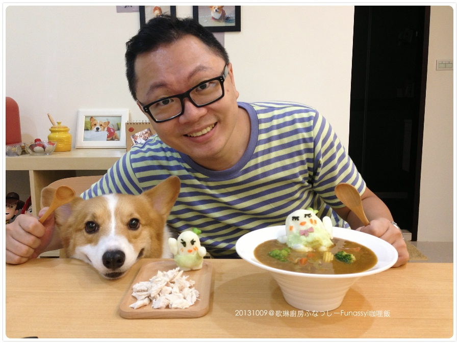
＝＝＝＝＝＝＝＝＝＝＝＝＝
想知道芙那西可以參考wiki--> 船梨精維基百科
這怪咖吉祥物真的很可愛，每次看他全身抖動就很好笑！ ！
很容易過度激動＆抗奮，彈跳力又超好，什麼動作都難不懂他，實在有夠活寶
影片中節目主持人一直想把他拉鍊打開看裡面是誰，快把我笑屎～～XDXDXD